Armas e Artefatos Daedricas
Dawnbreaker
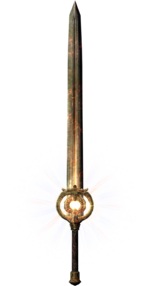Esta espada de uma mão é concedida ao completar a missão " O amanhecer ". Dawnbreaker incendeia inimigos, enquanto também causa mais dano a mortos-vivos como draugr e vampiros e tem a chance de fazer mortos-vivos explodirem em chamas azuis após a morte, o que causa danos e faz com que mortos-vivos próximos fujam, no mesmo sentido que Bane of the Undead .
Azura's Star ou The Black Star
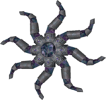 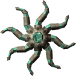A Estrela Negra tem a habilidade de capturar almas brancas e negras, ou de seres sencientes, em vez de apenas almas negras. Funciona como uma Black Soul Gem que aprisiona todas as almas até o nível Grande.
Azura's Star tem a habilidade de prender almas brancas ou de criaturas não-sencientes. Essas almas podem ser usadas para encantar e recarregar armas anteriormente encantadas.
Lâmina de Ébano
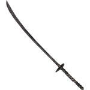A Lâmina de Ébano absorve 10 pontos de saúde dos inimigos por acerto, mas pode ser aprimorada apenas ao matar personagens aliados (como uma pessoa cujo favor foi cumprido). Para cada dois desses personagens mortos, a arma aumenta em poder, adicionando dois à força de absorção de saúde , até o máximo de 30.
Ebony Mail
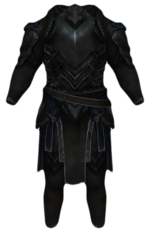O Ebony Mail é uma couraça de armadura pesada que é encantada com o efeito de abafamento e causa 5 de dano de veneno por segundo aos inimigos próximos. Ele também produz um efeito de sombra ao se esgueirar. Esta é a única peça de armadura além das botas que é conhecida por ser encantada com mufla, o que a torna muito útil para atualizar o Sneak .
Mace de Molag Bal
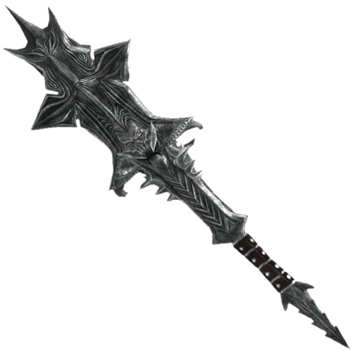A arma não só causa 25 pontos de resistência e magia por acerto, mas também rouba a alma de um inimigo se ele morrer em três segundos. Emparelhado com Azura's Star ou Black Star, o encantamento do Mace pode ser autossuficiente.
Máscara de Clavicus Vile
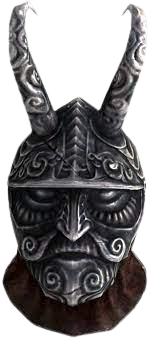Este elmo de armadura pesada único é concedido por completar a missão " Melhor amigo de A Daedra ", mas apenas se o Dragonborn escolher dar a Vile seu machado em vez de usá-lo para matar Barbas .
Navalha de mehrunes
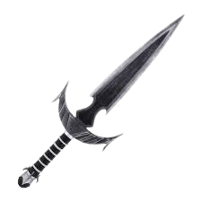O encantamento da Navalha de Mehrunes tem 1,98% de chance de matar instantaneamente qualquer oponente.
Oghma Infinium
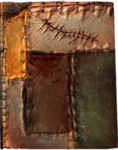Quando lido, o Oghma Infinum concederá um aumento permanente de 5 pontos a todas as habilidades relacionadas a qualquer uma das três principais constelações de guardiões: o Guerreiro , o Mago e o Ladrão .
Anel de namira
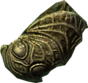O Anel de Namira concede ao usuário um aumento de 50 pontos de Vigor e o bônus de se alimentar de cadáveres, concedendo +50 de saúde e + 50% de regeneração de saúde.
Rosa sanguínea
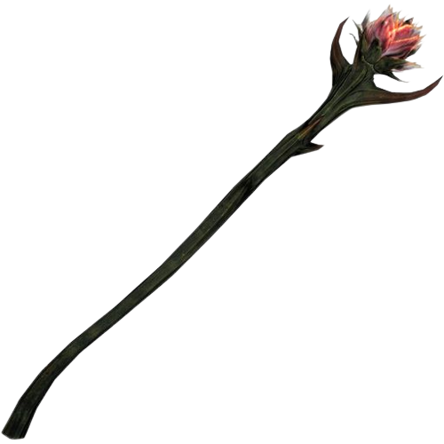A Rosa Sanguina convoca uma Dremora nivelada para lutar pelo portador por sessenta segundos.
Couro do Salvador e / ou Anel de Hircine
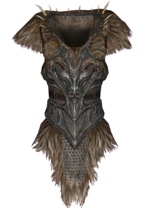 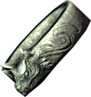O Couro do Salvador é uma couraça de armadura leve única que pode ser obtida se Sinding for morto na conclusão da missão. Ele fornece os seguintes benefícios
O Anel de Hircine pode ser obtido se Sinding for ajudado durante a missão. Seu encantamento concede ao usuário transformações de lobisomem ilimitadas por dia, assumindo que o usuário já seja um lobisomem.
Chave Mestra
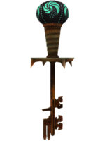A chave é um lockpick decorativo inquebrável . Ele pode ser mantido indefinidamente, desde que o jogador opte por atrasar o progresso na linha de missão da Guilda dos Ladrões.
Crânio da Corrupção
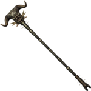A Caveira da Corrupção causa 20 pontos de dano, mas aumenta para 50 se for alimentada com sonhos coletados de pessoas adormecidas. Arremessar o bastão contra eles durante o sono vai reunir cinco sonhos para o bastão. Lançar um personagem enquanto ele está acordado, entretanto, será tratado como um ataque. A equipe tem uma gama de efeitos e também uma ilusão de tela única ao lançar.
Spellbreaker
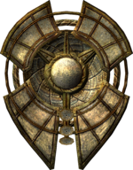Quando o bloqueio , que produz uma Ward -como efeito que protege o usuário de cinquenta pontos de magia danos . No entanto, ele não protege os usuários contra ataques de vapor dos anões.
Volendrug
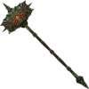Volendrung, também conhecido como Martelo da Força , absorve cinquenta pontos de Vigor por acerto. É essencialmente uma esponja de resistência gigante, já que muitas armas de duas mãos usam muita resistência para seus ataques de poder.
Wabbajack
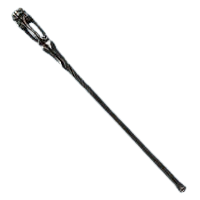O Wabbajack lança um feitiço imprevisível cujo efeito varia de transformar inimigos em outras criaturas ao lançar um feitiço de destruição aleatório para até mesmo curar totalmente os inimigos.